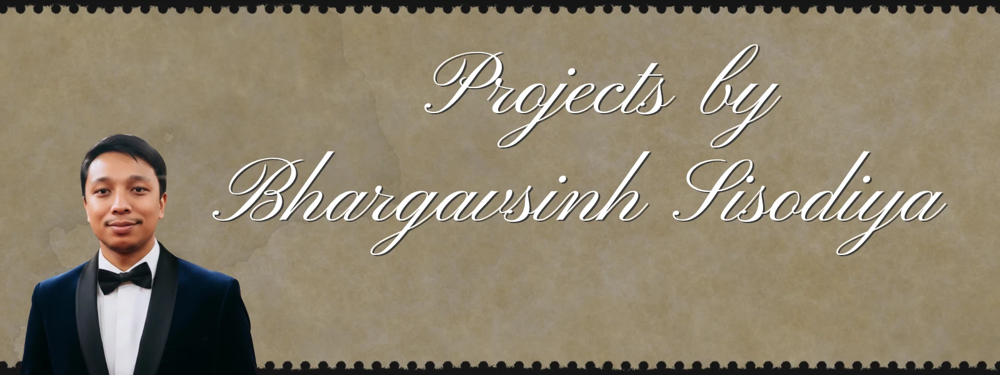

Resume
Full professional resume and experience overview.
Open →
HR Recruiter PortalClear overview of skills, projects, and writing work — designed for hiring managers seeking a clear professional overview.
BHARGAVSINH SISODIYA is a BCA student and technology enthusiast with active interest in web development, digital products, and professional writing. He also maintains research and literary work in Gujarati, including published material on philosophy and Pushtimarg.
For a full narrative biography and heritage background, see the About page.